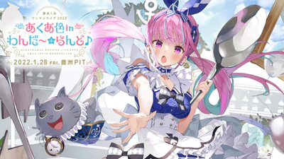
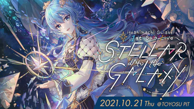
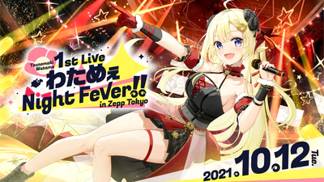

Minato Aqua One-man Live 2022 "Aqua Color in Wanda ~ Land ♪
This live is the 2nd live of "Akua Minato" belonging to "Hololive". In addition, from November 8th (Monday), distribution tickets will be on sale at "SPWN", and the first advance (lottery) for local visit tickets has also started.

Hoshimachi Suisei 1st Solo Live “STELLAR into the GALAXY” Supported By Bushiroad
This live is the 1st solo live of "Hoshimachi Suisei" belonging to "Hololive". In addition, from Saturday, August 21st, distribution tickets will be on sale at "SPWN", and the first advance (lottery) for local visit tickets has also started.

Tsunomaki Watame 1st Live "Watame Night Fever !! in Zepp Tokyo" Supported By Bushiroad
This live is the 1st solo live of "Tsunomi Watame" belonging to "Hololive". In addition, from August 19th (Thursday), distribution tickets will be on sale at "SPWN", and the first advance (lottery) for local visit tickets has also started.